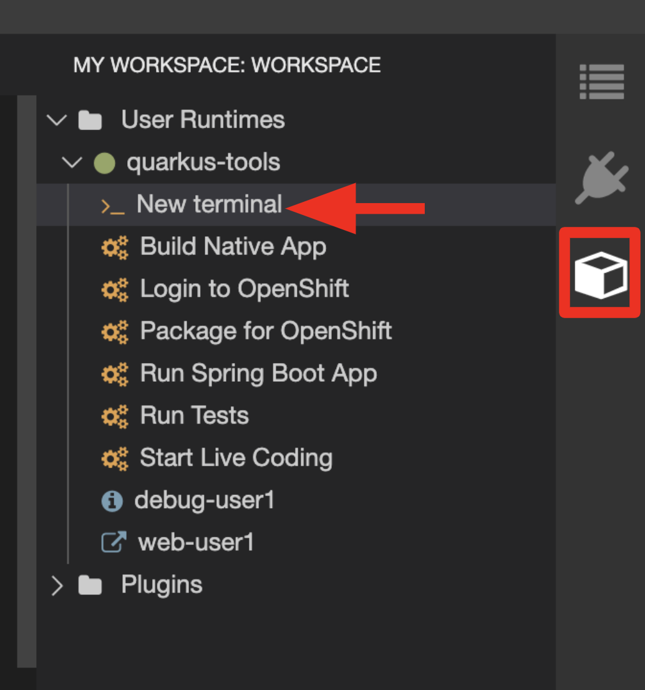

Quarkus from Zero to Serverless Guide
Getting Ready for the labs
Throughout the lab you will have to use both CodeReady Workspaces, an online IDE based on Eclipse Che, and the OpenShift Console. In any case you will be authenticated by OpenShift Oauth Server, please use these credentials:
-
Username:
%USERNAME% -
Password:
%PASSWORD%
You will be using Red Hat CodeReady Workspaces, an online IDE based on Eclipse Che. Changes to files are auto-saved every few seconds, so you don’t need to explicitly save changes.
Let’s get started! Access the CodeReady Workspaces instance and log in using the username and password you’ve been assigned. Using the next link in a new tab, this links will take you to the IDE you’ll be using and at the same time will create the workspace with all the tools needed.
https://codeready-openshift-workspaces.apps.%BASE_SUBDOMAIN%/f?url=https://raw.githubusercontent.com/atarazana/quarkus-zero-to-serverless-guide/main/devfile-internal.yamlBefore you can use your credentials please choose the identity provided named htpasswd_provider as in the next picture.
Now, you can use the provided credentials, then please click on Log in.
Finally, before you can start using CRW you have to provide some additional data, you can use the following example data:
-
Email:
user@%USERNAME%.com -
First Name:
User -
Last Name:
%USERNAME%
Once you log in, you’ll be placed on your personal dashboard. Click on the name of the pre-created workspace on the left, as shown below (the name will be different depending on your assigned number). You can also click on the name of the workspace in the center, and then click on the green %USERNAME%-namespace that says Open on the top right hand side of the screen.
After a minute or two, you’ll be placed in your workspace:
| You can see icons on the left for navigating between project explorer, search, version control (e.g. Git), debugging, and other plugins. You’ll use these during the course of this workshop. Feel free to click on them and see what they do. |
|
If things get weird or your browser appears, you can simply reload the browser tab to refresh the view. |
Many features of CodeReady Workspaces are accessed via Commands. You can see a few of the commands listed with links on the home page (e.g. New File.., Git Clone.., and others).
If you ever need to run commands that you don’t see in a menu, you can press F1 to open the command window, or the more traditional Control+SHIFT+P (or Command+SHIFT+P on Mac OS X).
Login to OpenShift
Although your Eclipse Che workspace is running on the Kubernetes cluster, it’s running with a default restricted Service Account that prevents you from creating most resource types. If you’ve completed other modules, you’re probably already logged in, but let’s login again: click on Login to OpenShift, and enter your given credentials:
-
Username:
%USERNAME% -
Password:
%PASSWORD%
You should see something like this (the project names may be different):
Login successful.
You have access to the following projects and can switch between them with 'oc project <projectname>':
* %USERNAME%-project
Using project "%USERNAME%-codeready".
Welcome! See 'oc help' to get started.|
After you log in using Login to OpenShift, the terminal is no longer usable as a regular terminal. You can close the terminal window. You will still be logged in when you open more terminals later! |
|
The Terminal window in CodeReady Workspaces. You can open a terminal window for any of the containers running in your Developer workspace. For the rest of these labs, anytime you need to run a command in a terminal, you can use the >_ New Terminal command on the right:

|
Open a new terminal (as described above) and create the project:
oc new-project %USERNAME%-fruit-service